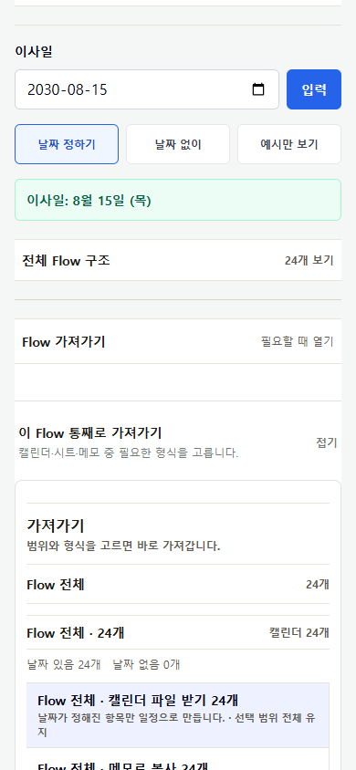
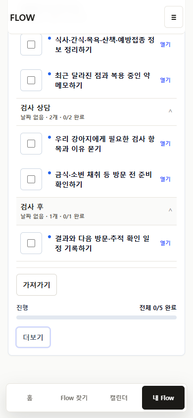
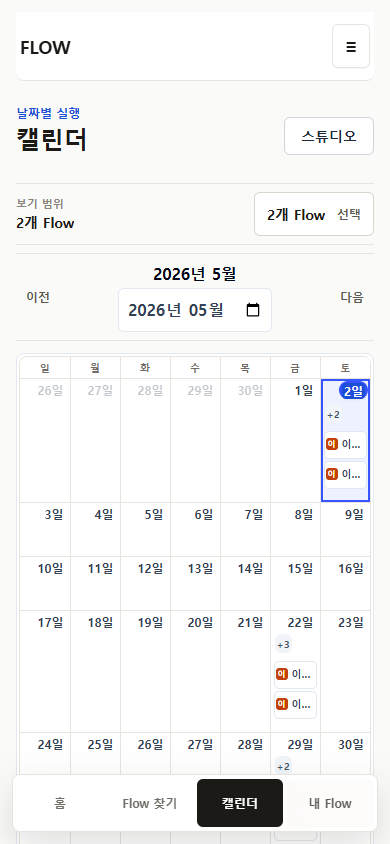
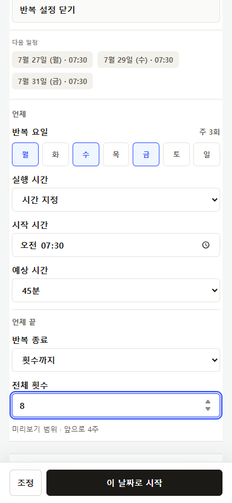
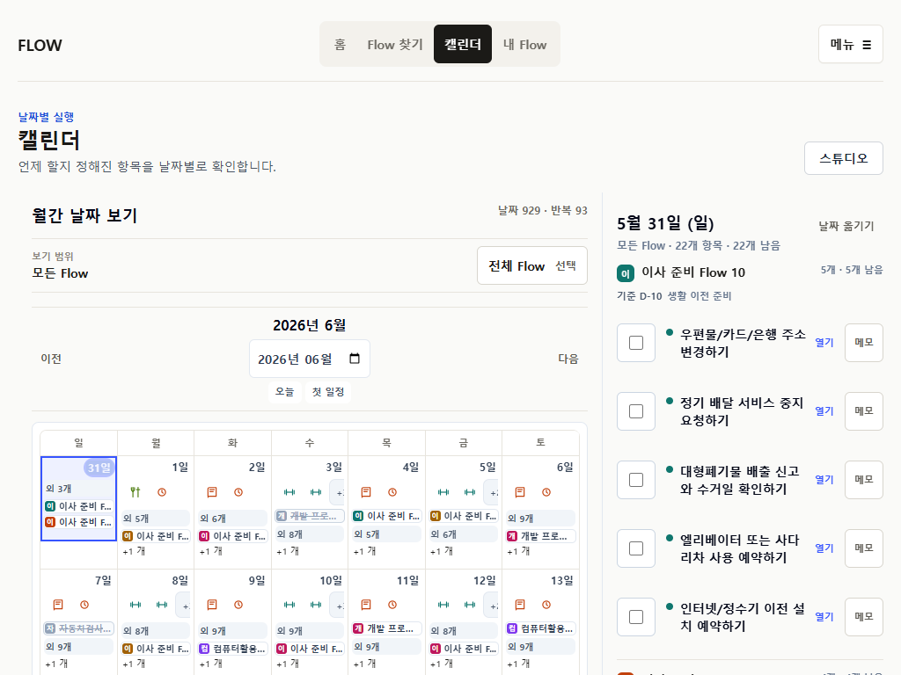
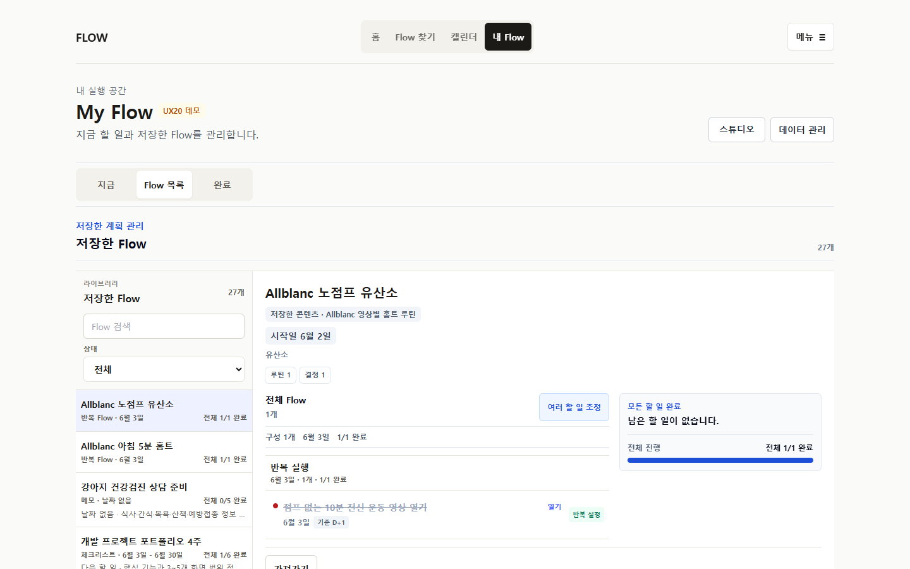
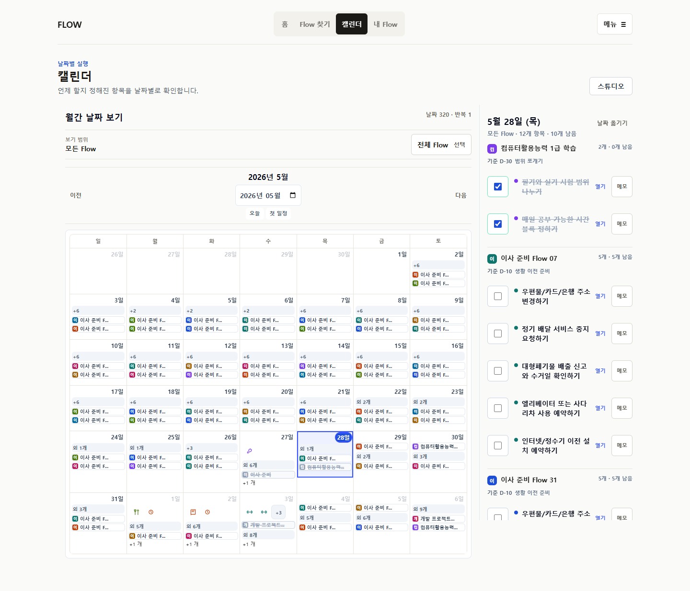

Export layer
public save CTA를 export 중 숨기고 My Flow primary를 bottom tabs 위로 올렸다. 교차 면적 0, close focus 복귀.
P30 evidence gap closure · 2026-07-22
P29의 데이터 계약과 4탭 IA는 유지한 채 모바일 export, focus order, 긴 조정, My Flow command, Calendar scale, 반복 설정의 실제 공백을 닫고 production에 배포했다.
public save CTA를 export 중 숨기고 My Flow primary를 bottom tabs 위로 올렸다. 교차 면적 0, close focus 복귀.
모바일 header 다음에 본문 controls를 탐색하고 persistent tabs는 마지막에 도달한다.
24개 항목을 기본 노출하지 않고 내용·날짜·항목·순서 중 현재 목적만 펼친다.
다음 행동 1개를 우선하고 source/archive는 더보기로 낮췄다.
날짜 없는 일 10→8→10, option 62개 중 2개 선택 5회, 같은 날짜 5개 full identity를 검증했다.
닫힌 상태 advanced input 0, 다음 3회, 열린 상태는 언제/언제 끝 그룹과 mode별 필드만 보인다.






PR #148이 merge SHA b3c8500으로 반영됐고 merge 후 CI가 모두 통과했다.
flowme2605.vercel.app의 13개 상태에서 HTTP, marker, overflow, unnamed focusable, console/page error 실패가 모두 0이다.


source, personal overlay, execution run, occurrence, export identity와 persistence schema를 변경하지 않았다.
4탭 IA와 public /f shell, Flow 단위 저장/export 범위를 유지했다.
dead public conditional만 제거했다. live /flow-maps consumer 1개는 명시적 legacy로 보존했다.
자동 브라우저와 heuristic review 결과다. 실제 사용자가 설명 없이 이해하는지는 아직 검증하지 않았다.